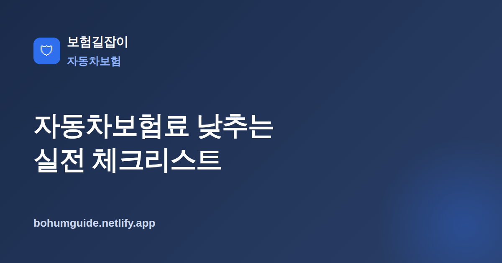

자동차보험료 낮추는 실전 체크리스트
같은 차, 같은 운전자라도 어떻게 가입하느냐에 따라 자동차보험료는 꽤 달라집니다. 보장은 지키면서 새는 돈만 줄이는 실전 방법을 정리했습니다.

✍️ 편집자 참고: 본 글은 초안입니다. 할인 특약·할증 기준 등은 보험사·시기마다 다르니 게시 전 최신 기준으로 검수·수정해 주세요.
자동차보험료를 낮추는 방법은 크게 두 가지로 나뉩니다. 하나는 보장은 그대로 두고 가입 경로나 조건만 조정해 같은 보장을 더 싸게 사는 것이고, 다른 하나는 보장 범위 자체를 줄여 보험료를 낮추는 것입니다. 앞쪽은 대부분 손해 없이 이득이지만, 뒤쪽은 보장 공백이라는 대가가 따르므로 신중해야 합니다. 이 글은 두 방향을 구분해, 먼저 안전한 절약부터 정리합니다.
보험료를 좌우하는 요소 빠르게 이해하기
자동차보험료는 몇 가지 축으로 결정됩니다. 운전자 요인(나이·경력·사고 이력에 따른 할인할증등급), 차량 요인(차종·연식·차량가액), 그리고 담보 구성과 특약입니다. 여기에 가입 경로에 따른 사업비 차이가 더해집니다. 즉 "내가 바꿀 수 없는 부분"과 "지금 바로 조정할 수 있는 부분"을 나눠 보면, 어디를 손봐야 실제로 보험료가 내려가는지 분명해집니다.
기본 담보의 개념이 아직 헷갈린다면 자동차보험 기본 구조를 먼저 훑어보는 것을 권합니다. 대인·대물·자기신체·자기차량·무보험차 상해가 각각 무엇을 보장하는지 알아야, 어떤 담보를 손대도 되고 어떤 담보는 손대면 안 되는지 판단할 수 있습니다.
실전 절약법 ① 다이렉트·비교 견적
가장 손쉬운 절약은 가입 경로를 바꾸는 것입니다. 설계사를 거치는 대면 채널 대신 온라인으로 직접 가입하는 다이렉트 방식은 중간 모집 비용이 줄어드는 만큼, 일반적으로 동일 조건에서 보험료가 낮게 산출되는 경향이 있습니다. 다만 스스로 담보를 설계해야 하므로, 앞서 본 기본 구조를 이해한 뒤 진행하는 것이 안전합니다.
여러 곳을 같은 조건으로 비교하기
한 곳의 견적만 보고 결정하지 말고, 운전자 범위·담보 한도를 동일하게 맞춘 뒤 여러 회사를 비교하세요. 조건이 조금만 달라도 금액 차이가 커 보이므로, 같은 기준으로 맞추는 것이 비교의 핵심입니다. 갱신 시점에는 기존 회사 갱신안과 새 견적을 나란히 놓고 확인하는 습관이 도움이 됩니다.
실전 절약법 ② 운전자 범위·연령 한정, 마일리지·블랙박스·안전운전 특약
실제로 운전하는 사람만 보장하도록 운전자 범위와 연령을 한정하면 보험료가 낮아지는 경우가 많습니다. 예컨대 본인 1인 한정, 부부 한정처럼 범위를 좁히고, 최저 운전 연령을 실제 운전자에 맞춰 올리는 식입니다. 다만 범위를 벗어난 사람이 운전하다 사고가 나면 보상이 크게 제한되므로, 명절·여행처럼 다른 가족이 운전할 일이 있는지 미리 따져야 합니다. 자세한 설정 요령은 운전자 범위·연령 한정특약 제대로 알기에서 다룹니다.
주행거리가 적다면 마일리지 특약이 유효합니다. 연간 주행거리가 기준 이하일 때 보험료 일부를 할인·환급받는 구조로, 출퇴근 거리가 짧거나 주말에만 차를 쓰는 경우 효과가 큽니다. 여기에 블랙박스 장착 할인, 안전운전(운전습관 연동) 특약을 더하면 할인폭을 넓힐 수 있습니다. 특약별 조건과 조합 요령은 마일리지·블랙박스 특약으로 보험료 아끼기에서 자세히 정리했습니다.
실전 절약법 ③ 물적할증기준금액·자기부담금·불필요 담보 조정
물적할증기준금액은 사고로 낸 수리비가 이 금액을 넘으면 다음 갱신에서 할증이 커지는 기준선입니다. 기준금액을 높게 설정하면 당장의 보험료는 낮아질 수 있지만, 작은 사고에서도 자기부담금이 늘어날 수 있어 균형이 필요합니다. 자기차량손해의 자기부담금 비율·한도 역시 조정 대상인데, 부담금을 올리면 보험료는 내려가지만 사고 시 내 지갑에서 나가는 몫이 커집니다.
| 방법 | 기대 효과 | 유의점 |
|---|---|---|
| 다이렉트 가입 | 모집 비용 절감으로 보험료 하락 경향 | 담보를 직접 설계해야 함 |
| 운전자 범위·연령 한정 | 보장 대상 축소로 보험료 절감 | 범위 외 운전 시 보상 제한 |
| 마일리지·블랙박스 특약 | 주행 적을수록 할인 폭 큼 | 주행거리 초과 시 할인 축소 |
| 자기부담금 상향 | 매달 보험료 부담 완화 | 사고 시 본인 부담 증가 |
이미 다른 보험으로 겹치는 담보가 있다면 정리 대상입니다. 예를 들어 운전자보험이나 다른 상품에서 중복 보장되는 부분이 있는지 확인하면, 불필요한 담보를 덜어 보험료를 낮출 수 있습니다. 다만 중복처럼 보여도 지급 방식이 다른 경우가 있으니 약관을 함께 확인하세요.
- 동일 조건으로 다이렉트 포함 여러 견적을 비교했는가
- 실제 운전자에 맞춰 운전자 범위·연령을 한정했는가
- 연간 주행거리에 맞는 마일리지 특약을 적용했는가
- 블랙박스·안전운전 등 할인 특약을 빠짐없이 넣었는가
- 물적할증기준금액과 자기부담금을 상황에 맞게 설정했는가
- 다른 보험과 중복되는 담보를 정리했는가
무리한 축소의 위험(보장 공백 주의)
보험료를 낮추겠다고 핵심 담보까지 줄이면 정작 큰 사고에서 감당하기 어려운 상황이 올 수 있습니다. 특히 대인·대물 배상 한도는 사고 규모에 따라 배상액이 수억 원에 이를 수 있으므로, 무리하게 낮추는 것은 권하지 않습니다. 절약은 어디까지나 "안전한 여유분"을 줄이는 데서 그쳐야 합니다.
보장 공백에 주의하세요
운전자 범위를 좁히거나 담보 한도를 낮출 때는, 그 조건을 벗어나는 상황(가족 운전, 대형 사고 등)에서 보상이 제한되거나 배상 여력이 부족해질 수 있습니다. 보험료 몇 만 원을 아끼려다 사고 한 번에 훨씬 큰 부담을 질 수 있으므로, 대인·대물 등 핵심 배상 담보는 충분히 유지하는 것이 원칙입니다.
요약하면, 자동차보험료 절약은 순서가 중요합니다. 먼저 손해 없는 절약(다이렉트·비교 견적, 실제 상황에 맞는 운전자 한정, 마일리지·블랙박스·안전운전 특약)을 챙기고, 그다음에 물적할증기준·자기부담금·중복 담보를 상황에 맞게 조정하되, 핵심 배상 담보는 지키는 것입니다. 이 원칙만 지켜도 보장 공백 없이 보험료를 합리적으로 낮출 수 있습니다.
참고할 수 있는 공신력 있는 자료
- 손해보험협회 — 자동차보험 등 손해보험 소비자 안내
- 금융소비자 정보포털 파인 — 보험 관련 공공 정보 조회
- 금융감독원 — 금융·보험 소비자 보호 및 안내
본 정보는 일반적인 안내이며, 할인·할증과 실제 보장은 각 보험사 약관과 전문가 상담을 통해 반드시 확인하시기 바랍니다.